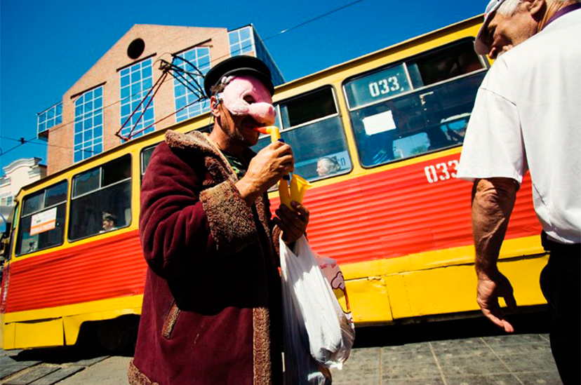

ЗАБИТЫЙ ЛЕВИАФАН
Вопросы вроде «Кто воюет за Новороссию?» сегодня роняют как лакмус в колбу. Безответна всякая новостная лента: что бы ты ни читал, таких выпущенных в пустоту заявлений чисто статистически больше, чем реальных попыток что- то выяснить. Соответственно, и реакция на них — не поиск ответа, а рефлекторная запись в один из лагерей.
Глеб Диденко опубликовано 9 января 2015 года
Чтобы самому не плодить риторические вопросы, отвечу: тем, на чьей стороне теперь маятник. Зависнув на секунду в крайней точке, он уже несется, чтобы дать по лбу тем, кто тогда закрывал газету «Завтра».
По первым пяти комментариям, а иногда и по одному, легко понять, в какое облако тегов погружен их автор, причем упрощение не навязано сверху, а старательно подхватывается снизу. «Сегодня на митинг должны выйти все честные люди Москвы!» «Свобода лучше, чем несвобода!» «Дадим отпор украинствующему фашизму!» «Выслать всех национал-предателей!» И счета этому нет.
«Сказать однозначно о составе ополченцев/сепаратистов (тоже зависит от облака тегов в голове читающего) не может никто, но ответов больше, чем кандидатов наук в госдуме. Самые популярные версии — российские наемники или добровольцы из местного населения. «Не представляю, — пишет мне знакомый, — как кто-то из моих знакомых может взять автомат и из России поехать умирать за Донбасс».
Все это было, просто было в другой форме и куда локальнее. И я даже не про добровольческие движения от Испании до Сербии. Украина сегодня — это Москва в октябре 1993 года: разделенная, контрастная, виртуальная. В одном месте люди выбивают захваченными грузовиками ворота «Останкино», а в другом — проходит митинг за спасение «молодой свободной России». Ельцин управляет страной в нарушение Конституции, отстраненный Верховным Советом, как Янукович, только наоборот. Чем просвещенная общественность, поддерживающая АТО, отличается от Лии Ахеждаковой, призывавшей с телеэкранов «давить коммунистическую гадину»? Чем Губарев, с гордостью рас-сказывающий о том, что в ополчении Новороссии служит итальянский фашист, отличается от тех, кто гордился, что Белый Дом защищает зигующее РНЕ? Чем открытые письма против действий России сегодня, подписанные «демократическими писателями», отличаются от того, опубликованного в «Известиях», где Лихачев, Астафьев и Окуджава умоляли Ельцина запретить «все виды коммунисти-ческих и националистических партий, фронтов и объединений»?..
И маятник этот мог бы двигаться куда медленнее, если бы не одно «но». Протесты трехлетней давности, и, скорее всего, та майская Болотная площадь (не то, чем она была на самом деле, а то, как ее восприняла власть) разрушили консенсус между сытыми недовольным и голодными довольными. В жирных двухтысячных царила доброта и согласие, кто-то периодически буянил, но не очень значительно и не против того. Бесконечная фантомная боль российской интеллигенции стала пророчеством только потому, что она сама экранизировала конспект своего ночного кошмара: каково ждать реванша втоптанных в грязь в 1993 году двадцать лет и самой его накликать? «Ах, вы говорите, что у нас Мордор? Забыли, что такое Мордор? Дайте напомним». И если мне ехидно зададут риторический вопрос: «Где же эти ополченцы взяли автоматы?», я отвечу: «Двадцать один год назад, в октябре, они распечатали оружейную Белого дома в Москве, того, что напротив гостиницы „Украина“».
Чтобы самому не плодить риторические вопросы, отвечу: тем, на чьей стороне теперь маятник. Зависнув на секунду в крайней точке, он уже несется, чтобы дать по лбу тем, кто тогда закрывал газету «Завтра».
И маятник этот мог бы двигаться куда медленнее, если бы не одно «но». Протесты трехлетней давности, и, скорее всего, та майская Болотная площадь (не то, чем она была на самом деле, а то, как ее восприняла власть) разрушили консенсус между сытыми недовольным и голодными довольными.
Статья 2. Международные договоры Российской Федерации
ГАРАНТ: См. комментарии к статье 2 настоящего Закона.
Если международным договором Российской Федерации установлены иные правила о защите прав потребителей, чем те, которые предусмотрены настоящим Законом, применяются правила международного договора.
Все это было, просто было в другой форме и куда локальнее. И я даже не про добровольчес-кие движения от Испании до Сербии. Украина сегодня — это Москва в октябре 1993 года: разделенная,контрастная, виртуальная. В одном месте люди выбивают захваченными грузовиками ворота «Останкино», а в другом — проходит митинг за спасение «молодой свободной России». Ельцин упра-вляет страной в нарушение Конституции, отстраненный Верховным Советом, как Янукович, только наоборот. Чем просвещенная общественность.
И маятник этот мог бы двигаться куда медленнее, если бы не одно «но». Протесты трехлетней давности, и, скорее всего, та майская Болотная площадь (не то, чем она была на самом деле, а то, как ее восприняла власть) разрушили консенсус между сытыми недовольным и голодными довольными. В жирных двухтысячных царила доброта и согласие, кто-то периодически буянил, но не очень значительно и не против того. Бесконечная фантомная боль российской интеллигенции стала пророчеством только потому, что она сама экранизировала конспект своего ночного кошмара: каково ждать реванша втоптанных в грязь в 1993 году двадцать лет и самой его накликать? «Ах, вы говорите, что у нас Мордор? Забыли, что такое Мордор? Дайте напомним».
Москва в октябре 1993 года: разделенная, контрастная, виртуальная. В одном месте люди выбивают захваченными грузовиками
И если мне ехидно зададут риторический вопрос: «Где же эти ополченцы взяли автоматы?», я отвечу: «Двадцать один год назад, в октябре, они распечатали оружейную Белого дома в Москве, того, что напротив гостиницы „Украина“». И маятник этот мог бы двигаться куда медленнее, если бы не одно «но». Протесты трехлетней давности, и, скорее всего, та майская Болотная площадь (не то, чем она была на самом деле, а то, как ее восприняла власть) разрушили консенсус между сытыми недовольным и голодными довольными. В жирных двухтысячных царила доброта и согласие, кто-то периодически буянил, но не очень значительно и не против того. Бесконечная фантомная боль российской интеллигенции стала пророчеством только потому, что она сама экранизировала конспект своего ночного кошмара: каково ждать реванша втоптанных в грязь в 1993 году двадцать лет и самой его накликать? «Ах, вы говорите, что у нас Мордор? Забыли, что такое Мордор? Дайте напомним».
Читать по теме:
Умом Россию не понять или 10 способов избежать кризиса
Технологический беспредел с человеческим лицом
Технологический беспредел с человеческим лицом
Комментарии:
Анастасия
Не очень согласна про Карнеги. Это же не панацея, а рекомендации и советы. Больше улыбайтесь - будете нравится людям. Почему интровертам должно быть от этого "плохо"? Не хотят - пусть не делают, кто от этого пострадал?
11 января в 23:45
КОММЕНТАРИЙ
Гарри Лепницкий
Генеральный директор ОАО «Избирательные избиратели»
Подписанные «демократическими писателями», отличаются от того, опубли- кованного в «Известиях», где Лихачев, Астафьев и Окуджава умоляли Ельцина запретить «все виды коммунисти-ческих и националистических партий, фронтов и объединений»?
Подписанные «демократическими писателями», отличаются от того, опубликованного в «Известиях», где Лихачев, Астафьев и Окуджава умоляли Ельцина запретить «все виды коммунисти-ческих и националистических партий, в «Известиях», где Лихачев, Астафьев и Окуджава умоляли Ельцина запретить «все виды коммунисти-ческих и националистических партий, фронтов и объединений»? Подписанные «демократическими писателями», отлича-ются от того, опубли-кованного в «Известиях», где Лихачев, Астафьев и Окуджава умоляли Ельцина запретить «все виды коммунисти-ческих и националистических партий, фронтов и объединений»?